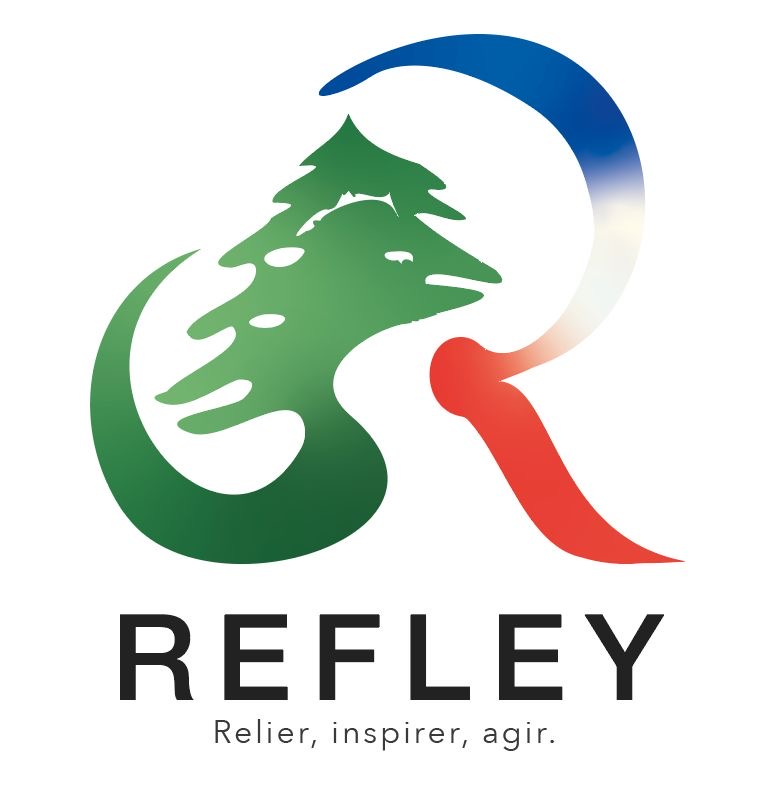
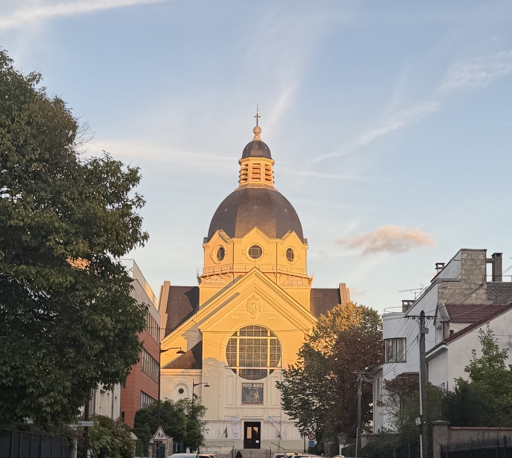
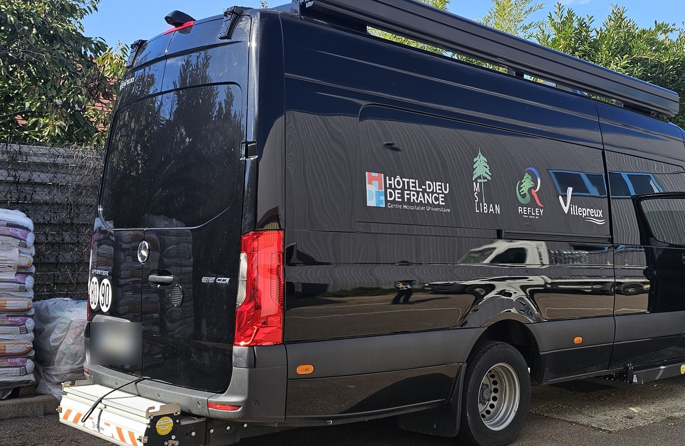
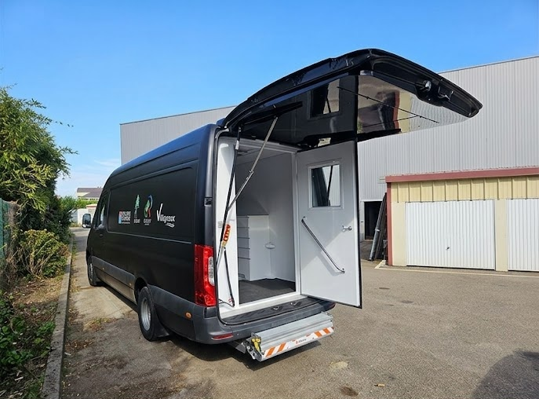

Le Festival du Film Libanais de France s'installe à l'Institut du monde arabe et au cinéma Élysées Lincoln.
Source : paris.fr
Le festival consacre une rétrospective à son œuvre, en sa présence.
Source : lepetitjournal.com
Le bilan dressé lors d'un colloque à l'Assemblée nationale, le 1er octobre.
Source : lepetitjournal.com, 6 octobre 2026
Le lycée de Nabatieh rouvrira ses portes après les vacances de la Toussaint, a annoncé l'AEFE.
Source : lepetitjournal.com, 6 octobre 2026

Église Sainte-Jeanne-d'Arc, VersaillesMesse en rite maronite à l'église Sainte-Jeanne-d'Arc, puis échange en visio avec Mgr Charbel Abdallah, archevêque de Tyr.
Une soirée proposée par MS Liban, jumelage Versailles — Tyr.

Parti de Villepreux le 18 septembre, le bus médicalisé desservira neuf localités du caza de Jezzine.
Avec la Ville de Villepreux, la Municipalité d'Azour et l'Hôtel-Dieu de France.

Acheminement jusqu'au Liban, dédouanement : chaque don compte.
refley.fr/don lien en bio